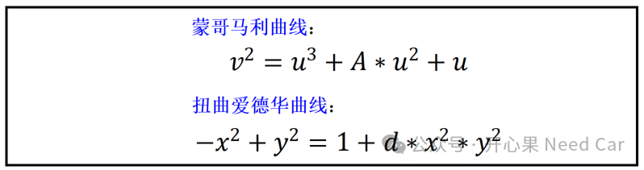
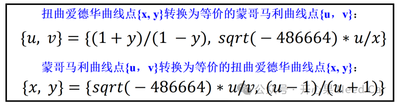

讨论基于X25519密钥交换原理之前，需要理解一些数学知识。除了个别点外，扭曲爱德华曲线（twisted Edwards curve）和蒙哥马利曲线（Montgomery curve）双向有理等价，即：扭曲爱德华曲线点和蒙哥马利曲线点可以相互映射。按照RFC7748解释，扭曲爱德华曲线和蒙哥马利曲线公式表示如下：

两条曲线坐标点的转化关系如下所示：

1、基于X25519密钥交换原理
X25519 是 ECDH（Elliptic Curve Diffie-Hellman，椭圆曲线迪菲-赫尔曼密钥交换）的具体实现之一。X25519 使用特定的椭圆曲线（Curve25519）来进行密钥交换，同时，X25519定义了使用 Curve25519 曲线的具体算法和参数。
实现密钥交换功能之前，首先，需要实现X25519函数功能，之后，基于X25519函数完成密钥交换。
（一）X25519函数
X25519对蒙哥马利形式执行标量乘法，以一个标量和一个u坐标作为输入，并产生一个u坐标作为输出，即：u_out = X25519(k, u_in)。其中，标量（k）是一个32bytes的随机数，注意，这个32byes随机数需要处理后使用，具体处理规则如下：set the three least significant bits of the first byte and the most significant bit of the last to zero, set the second most significant bit of the last byte to 1 and, finally, decode as little-endian. |
对应的代码示例如下：
rand[0] &= 0xF8;rand[31] &= 0x3F;rand[31] |= 0x40;
实现X25519功能以后，生成共享密钥也就相对简单了。
首先，通过私钥生成公钥，即：pub_key = X25519(pri_key, 9)。注意：第二个固定参数9按照小端格式存储，即：0x09后面跟31个0x00，共32 byte。规范描述如下：where 9 is the u-coordinate of the base point and is encoded as a byte with value 9, followed by 31 zero bytes. |
其次，通过对端的公钥（pub_key_out）和自身的私钥（pri_key_in）生成共享密钥，即：shared_key = X25519(pri_key_in, pub_key_out)。假设：需要建立安全通信的双方为Alice和Bob。1、Alice通过私钥（a）生成公钥K_A = X25519(a, 9)，并将公钥K_A发送给Bob。同时，Bob通过私钥（b）生成公钥K_B = X25519(b, 9)，并将公钥K_B发送给Alice;2、Alice由a和K_B生成共享密钥shared_key_A = X25519(a, K_B)，同时，Bob由b和K_A生成共享密钥shared_key_B = X25519(b, K_A)。3、shared_key_A == shared_key_B ，之后，Alice和Bob通过该共享密钥进行安全通信。Q1：既然扭曲爱德华曲线（twisted Edwards curve）和蒙哥马利曲线（Montgomery curve）的坐标点可以相互转换，那么，基于EdDSA，是否可以进行密钥共享呢？
A2：为了避免符号位带来的影响，X25519需要对输入的u坐标系的最高bit进行处理，具体处理措施：
点击下方关注，一起聊聊Autosar/嵌入式，如果需要，联系作者进群，给你更专业的解答